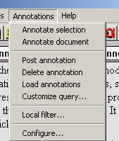
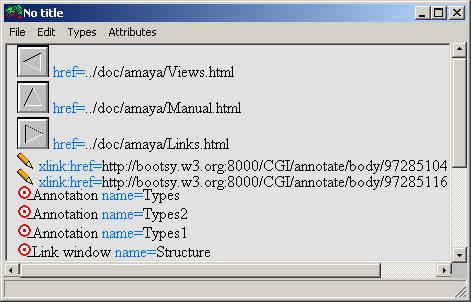

|
Annotations are comments, notes, explanations, or other types of external remarks that can be attached to a Web document or a selected part of the document. As they are external, it is possible to annotate any Web document independently, without needing to edit that document. From the technical point of view, annotations are usually seen as metadata, as they give additional information about an existing piece of data. In this project, we use a special RDF annotation schema for describing annotations.
Annotations can be stored locally or in one or more annotation servers. When a document is browsed, Amaya queries each of these servers, requesting the annotations related to that document. Currently Amaya presents annotations with pencil annotation icons ( )that are visually embedded in the document, as shown in the figure below. If the user single-clicks on an annotation icon, the text that was annotated is highlighted. If the user double-clicks on this icon, the annotation text and other metadata are presented in a separate window.

An annotation has many properties including:
Amaya can store annotation data in a local file system (called "local annotations") or in the Web (called "remote annotations"). Remote annotations are stored in annotation servers and can be downloaded and stored by anyone having the correct access rights, such as is the case of other HTML documents. We also refer to remote annotations as shared or public annotations, as they can be seen by other people. If you wish to install your own annotation server, please refer to Annotation-Server-HOWTO.
The user doesn't need a server to make local annotations.
Local annotations are stored under the user preferences
directory, in a special directory called annotations, and can
be seen only by their owner (according to the system access right setup). This
directory is made of three kinds of files:
At any time, a user can convert a local annotation to a shared one, by using the Annotations/Post annotation menu entry. If this operation is succesful, the local annotation will be deleted, as it will have been moved to an annotation server. The following section describes how to set up the name of the server to which annotations should be posted.
Most of the commands needed for handling annotations can be found from the Annotations menu shown below. The commands are explained later in this document in the context of users' goals when handling annotations.

The annotations configuration menu is found under theAnnotations/Configure menu entry. The following figure shows the Windows version of this menu. The Unix version has a slightly different user interface, but the same functionalities.

u1723242 (which makes
happy my system administrator) to marja (which other people
normally use when talking with me).Return key to add a new one. By default, the annotation
servers field is initialized to localhost.This setting defines the server to which the annotations are posted. Local annotations are always saved to the local repository, regardless of the value of this setting. By default, this setting is empty. Note that the post server is not automatically included in the list of servers to be queried; you must enter the post server name in both places, in whatever order you choose.
This version of Amaya support two kinds of annotations: annotations that apply to a whole document and annotations that apply to a specific point or selection in a document.
To annotate a whole document, just select the Annotations/Annotate document menu entry. To annotate a point, put the caret in any point in the document and select the Annotations/Annotate selection menu entry. To annotate a selection, make a selection in the document, and then use the Annotations/Annotate selection menu entry. In all of these cases, an annotation window will appear (see following figure). The content of this window shows the metadata of the annotation, inside a box, and the body of the annotation.

Currently, the metadata consists of the author's name, the title of the annotated document, the type of the annotation, the date of creation, and the date of the last modification . Some of the metadata fields have special properties. The source document field is also a link that points back to the annotated text. If the user double-clicks on it, as when following any other link with Amaya, the annotated document will be raised and the annotated text will be highlighted. The annotation types field allows the user to classify the annotation and change its type. Double-click on the text "annotation type" to see the list of types available. We'll describe later how users can also define their own annotation types. Finally, the Last modified field is updated automatically each time that an annotation is saved.
Below the header area is the annotation body area. It shows the current content, and it can be edited as if we were editing any other HTML document,. N.B., we don't support yet the use of images inside the body. Some of the features may not be ready in the initial release, such as the Structure view.
Saving an annotation is equivalent to saving any other document with Amaya. The user just needs to select the File/Save command (or use its equivalent shortcut or button menu). Local annotations are saved to the annotations directory and remote annotations are saved to the annotation post server where they are stored if the user has write access. To convert a local annotation into a shared one, the user needs to use the Annotations/Post annotation command and the annotation will be saved to the Post server as defined in the configuration menu. If this operation is succesful, the local annotation will be removed and further save operations will go directly to that annotation server. In the initial release, Amaya does not support an operation to save a copy of a remote annotation in the local annotations directory.
Some commands applied to the document in the Amaya Document window will be applied to annotation document in the Annotation window. For instance, the body of an annotation can be printed with File/Print command, or reloaded with File/Reload document command. (Note: some of these may not be implemented yet.)
The Annotations/Delete annotation menu command lets you delete an annotation. You can invoke this command from an open annotation window. You can also delete an annotation from the annotated document by first selecting the annotation by doing a simple click on the annotation icon, and then calling this menu command.
The Load annotations command tells amaya to load the annotations that are associated to the URL of the document that is being browsed in that window. Amaya will query the annotations servers, as set up in the Annotations/Configure dialogue, asking for any relevant annotation.
The annotations can also be loaded automatically whenever a new page is loaded by selecting the Autoload annotations checkbox in the Annotations/Configure dialogue.
Note that in this version of Amaya, querying an annotation server will return all the the annotations that are associated to to a document. In a future version, it may be possible to use a customized query menu to refine the query string that is sent to the servers.
The Annotations/Local filter menu allows a user to show or hide the annotation icons from the document window, for example, to concentrate on those that really interest him, or, to make it easier to read a heavily annotated document. The user can show or hide annotations by three types of metadata: by the name of the annotation's author, by the type of annotation, and by the annotation server name. To apply any of these filters, you need to click on the text box to select a given type of annotations, and then on the corresponding action button. The Show all and Hide all commands apply to all the annotations.A small and uncomfortable prefix charater shows the status of a given entry. This character can be either a space (' '), a star ('*') or a signet ('-') to say that tje annotations belonging to this given entrty are all visible, all hidden, or partially visible, respectively.
Note that the filter menus only show you the annotations it knows about at the moment of its invocation. If you add new annotations in the meantime, you'll need to destroy this menu and invoke it again to see them.
Note that for each annotation, the annotation user is shown by concatenating the author's name to the name of the annotation server where the annotation is stored, as shown in the following figure.

Annotations appear as links in the Link window whih can be activated by the Views/ Show links command. Annotations in this window are marked with the same pencil icon as the annotations in the document window. The Link window shows all the annotations, without taking into account whether they have been hidden with the Annotation Local Filter menu. As with the document window, a single-click on the annotation will select the annotated text in the document window and a double click will open the annotation. This is an example of how to navigate from one annotation link to another even if the annotation cannot be seen by the user because of disabilities or because of the characteristics of the used device.

If you are using annotations with live documents (documents whose contents can be modified), you may encounter two kinds of problems: orphan annotations and misleading annotations. Let's first describe a bit more in detail how Amaya attaches annotations to documents.
Amaya uses XPointer to describe where an annotation should be attached to a document. XPointers are based in the structure of the document. To build an XPointer, for example for a selection, we start from the first point of the selection and walk backwards through the document's structure, until we find the root of the document. If an element has an ID attribute, we stop building the XPointer and we consider that the beginning of this XPointer is the element that has this ID attribute value. For example,. if you look at the HTML source for this document, you'll notice that this section (Issues with annotations...) is enclosed within a DIV element that has an ID attribute with the value "Issues". Here's an extract of the source code:
<div id="Issues"> <h3>>Issues with ....</h3>> <p>If you are using...</p> <p>Amaya uses <strong>XPointer</strong>...</p> ... </div>
And here's the XPointer that points to the second paragraph::
xpointer(id("Issues")/p[2])
The above XPointer points to the second p element, from the
element parent having an ID attribute with value "Issues". (In order to select
a whole paragraph, we put the cursor in the paragraph and pressed the Escape
(Unix) or F2 (Windows) key). Note that the use of the ID attribute allows the
document author to move this whole section elsewhere on the document, without
needing to update the XPointer. The XPointer doesn't depend on the elements
that precede this particular DIV element.
We say that an annotation becomes an orphan when it cannot
be attached anymore to a document, that is, when the XPointer doesn't resolve
anymore to any element in the strucutre. This happens when a document's
structure is modified. For example, the above XPointer wouldn't resolve
anymore if we destroyed the ID attribute "Issues". Amaya will warn you if it
detects any orphan annotation while downloading a set of annotations from an
annotation server. All orphan annotations are visible from the Links view and
are associated with an icon that shows a question mark superimposed on the
annotation pencil  .
.
We say that an annotation is misleading when it points to a wrong piece of information. Coming back to our example, we can create a misleading annotation if we exchange the first and second paragraph. The XPointer will continue to point to the second paragraph, although we would have liked it to point now to the first paragraph. This problem is even more common when you annotate a portion of text that may change. In the first release, Amaya does not warn the user if an annotation is misleading. A future release may notify users of the potential for an annotation to be misleading.
How can you protect yourself?
If you're the author of a document, try to use the ID attribute in strategic places, for example, in the DIV elements. Amaya allows you to automatically associate or remove an ID attribute to/from a set of elements by means of the Special/Make Add/Remove ID menu command. In the above example, we could have avoided the problem of misleading annotations if we had added an ID attribute to the second paragraph:
<p id="Amaya">Amaya uses...</p>
An XPointer that points to this paragraph is
xpointer(id("Amaya"))
Thus, the Xpointer will point to the same paragraph, regardless of its position in the document's structure.